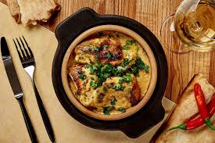

Chkmeruli

Description
Chkmeruli is a Georgian dish made of chicken, fried and then cooked in a garlic sauce.
Ingredients
- 1 whole chicken
- 1 head garlic, chopped
- 1 thumb fresh ginger
- 1 cup milk (more or less)
- 1 cup heavy cream (more or less)
- 2 tbsp oil
- 1 tbsp butter
- 1 tbsp ground coriander
- 1 tbsp red ajika paste
- 1 tbsp chopped fresh parsley
- Salt and pepper to taste
Steps
- Cut chicken into 8 pieces, plus wings, and season it with salt, pepper and coriander
- Crown the chicken in a cast iron skillet
- Add a splash of wine to the pan and put it in the oven
- One head of garlic and ginger in a garlic press
- Put them into anoter pan along with milk and cream, enough to cover the chicken
- Add ajika
- Five minutes before the chicken is ready, pour the sauce on it
- Enjoy